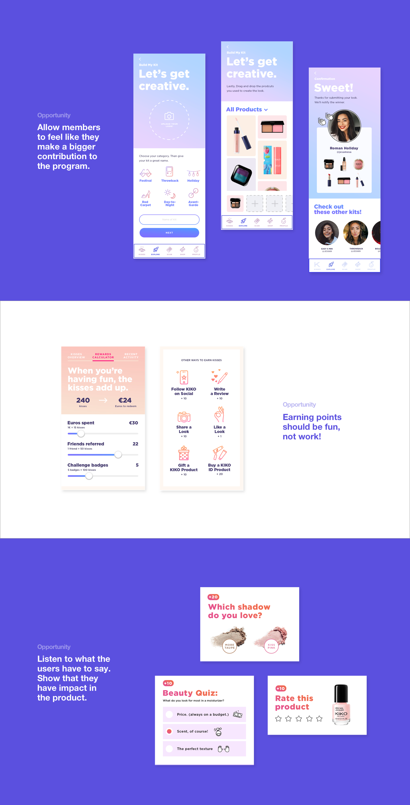
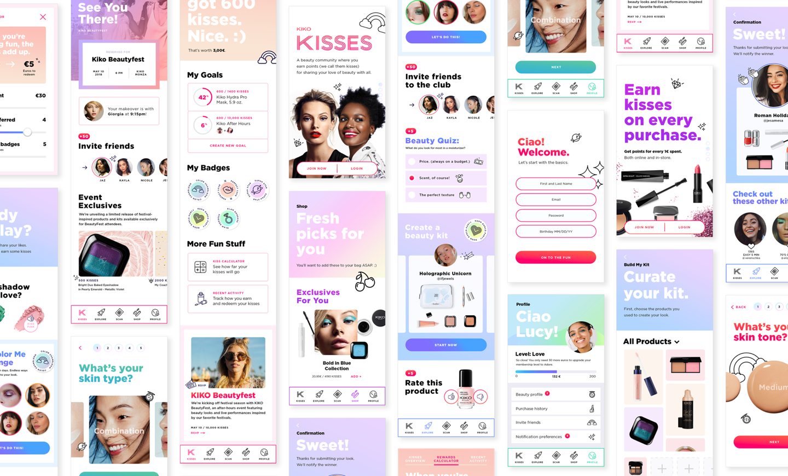

Kiko
Cosmetics.
A loyalty app concept to give a European cosmetics brand a fresher, flirtier voice — making the relationship between brand and customer feel like a conversation, not a punch card.
A loyalty app that doesn’t feel like one.
Most loyalty programs are accounting in a wrapper: how many points, how close to the next tier, how soon to the next reward. The brief asked what a loyalty app could look like if the points were the least interesting thing about it — if the app instead became a place to build a personal relationship with the brand.

Currency as character.
The points became kisses — a small visual and verbal pun that gave the brand somewhere to flirt. Earned through purchases and through interaction with the app itself; redeemable for products, samples, and experiences.
The system gave the brand a unit of language as well as currency: the app could give kisses, send kisses, ask for kisses — and the language stayed consistent across notifications, rewards, and product surfaces.

Editorial color, playful copy.
The visual system leaned into soft blush palettes, generous type, and a copy voice that took itself less seriously than most beauty apps. The brand could be playful without abandoning its position.
A pitch with legs.
The work was developed as a pitch and informed the client’s thinking about how a loyalty layer could become a brand surface in its own right.